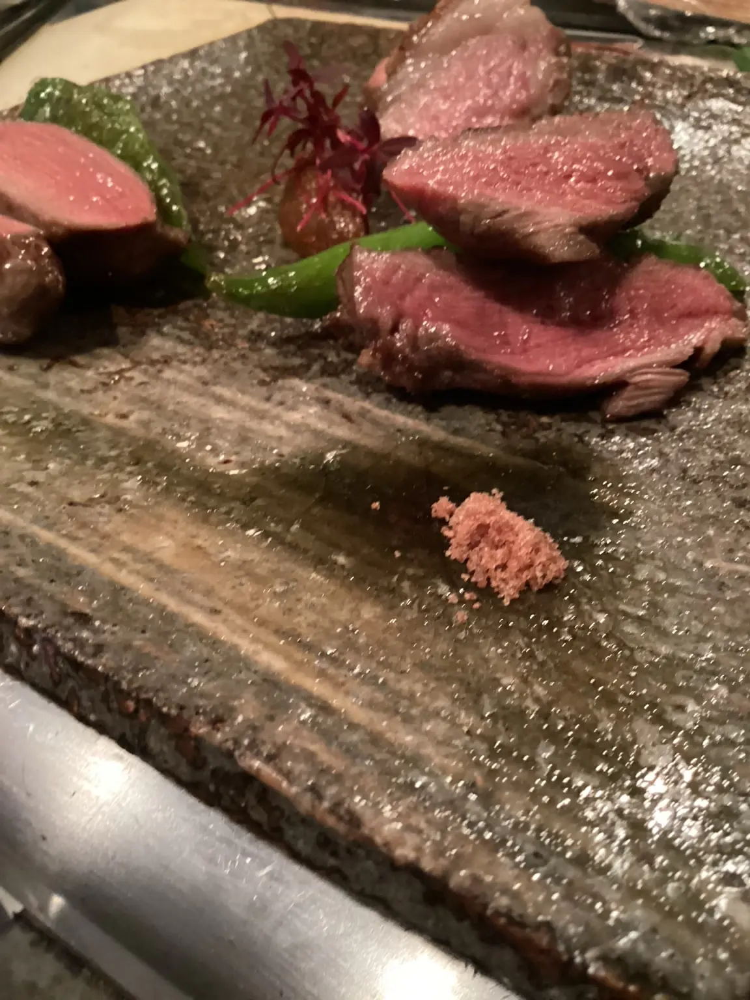
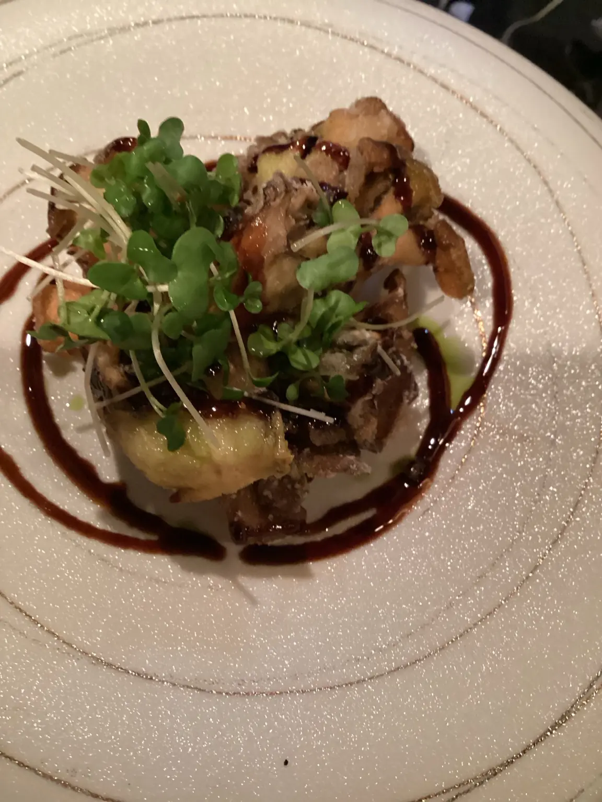
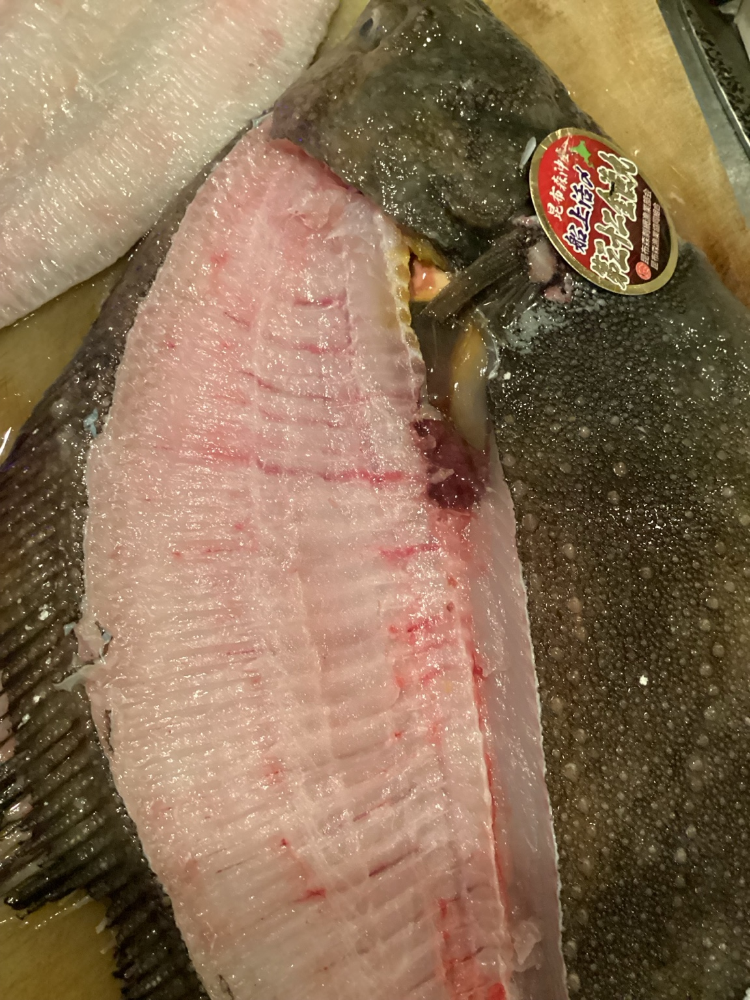
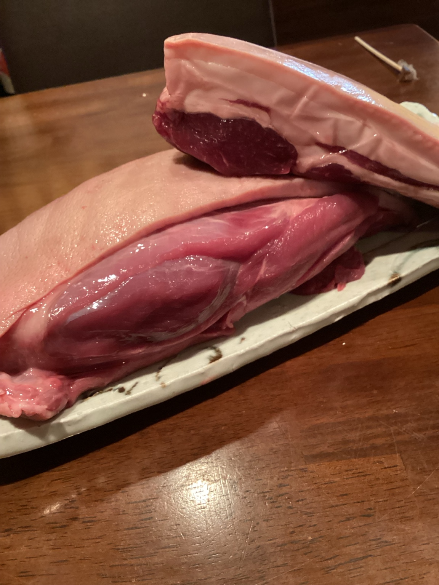

10月9日のフレンチ会では、猪と鮫カレイを主役に、アラカルトで料理をご提供しました。
当日ご提供した料理


魚の主役、鮫カレイ

鮫カレイはポワレとしてご案内しました。
肉の主役、猪

猪は「イノシシのロースト 自家製合わせ味噌」としてご提供しました。
京都・丸太町の饗応 元でご提供した料理を、当日の写真とともにご紹介します。
10月9日のフレンチ会では、猪と鮫カレイを主役に、アラカルトで料理をご提供しました。



鮫カレイはポワレとしてご案内しました。

猪は「イノシシのロースト 自家製合わせ味噌」としてご提供しました。